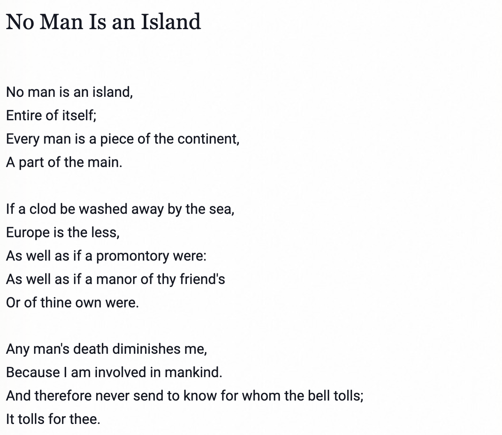

 - John Donne, from Devotions Upon Emergent Occasions
From https://nosweatshakespeare.com/quotes/famous/no-man-is-an-island
The words ‘No man is an island’ were embedded in a deeply Christian sermon about how human beings are connected to each other, and how important that connection is for the wellbeing and survival of any individual. When you hear the church bell tolling for someone who has died, don’t ask who it is, Donne says, just know that it’s tolling for you too because you are part of the same society and the death of anyone takes a part of your own life away.
Does the Bell toll for thee?
Let us explore, sadly, the dark side of Game Theory. Where our own
agent-like actions lead to bad outcomes in Society…
Always?
Not if we…choose to copy others wisely !!
Let us play The Game of the Polygons (web link)
Why are Petrol Stations located next to each other? Here is the
Hotelling’s Phenomenon, explained.
{{% youtube "u4cKzGj58q4" %}}
Henderson, Ron. 12 June 2022. Luxury Beliefs are Status Symbols: The struggle for distinction. https://www.robkhenderson.com/p/status-symbols-and-the-struggle-for?utm_campaign=post&utm_medium=web Accessed 07 Jan 2024.
{{% youtube "ck7Krz7QcxU" %}}
The Network Effects Bible. https://www.nfx.com/post/network-effects-bible
Mitchell Resnick. Beyond the Centralized Mindset. https://web.media.mit.edu/~mres/papers/JLS/JLS-1.0.html